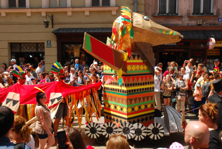
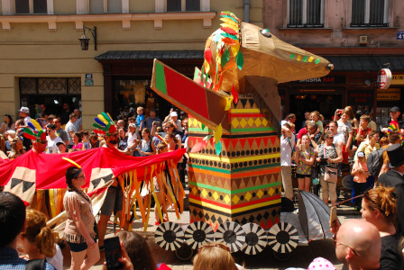

Pochodzi z Chin. Ma 1000 lat.
Żywi się mniejszymi zwierzętami.
Posiada łuski cenne na rynkach wschodnich do wyrabiania lekarstw.
Jest dziki i groźny.
Smok zielony
Pochodzi z Bułgarii. Ma 10000 lat.
Żywi się mniejszymi zwierzętami, ale tylko w kolorze zielonym.
Jest kosmaty. Z sierści zgubionej przez niego,
tka się najdroższe materiały.
Smok niebieski
Pochodzi z Francji. Ma 100 lat. Żywi się owocami morza.
Jest natchnieniem dla najlepszych malarzy. Często im pozuje.
Smok ten jest przyjacielem ludzi i czasami im pomaga.
Jest jednak próżny i nie lubi się przepracowywać.
 
